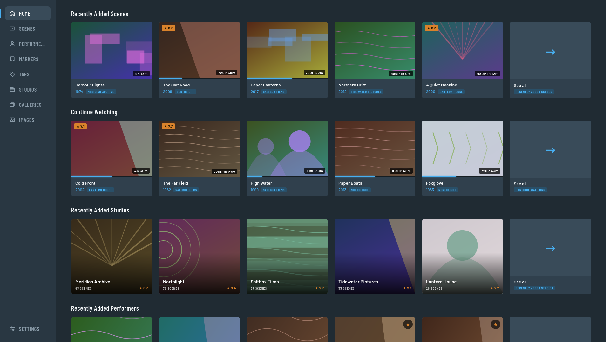
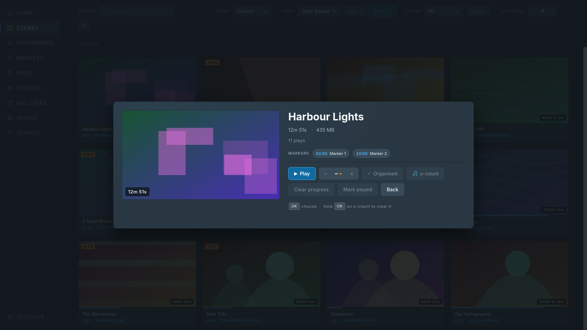
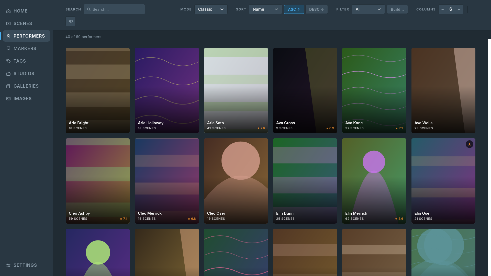
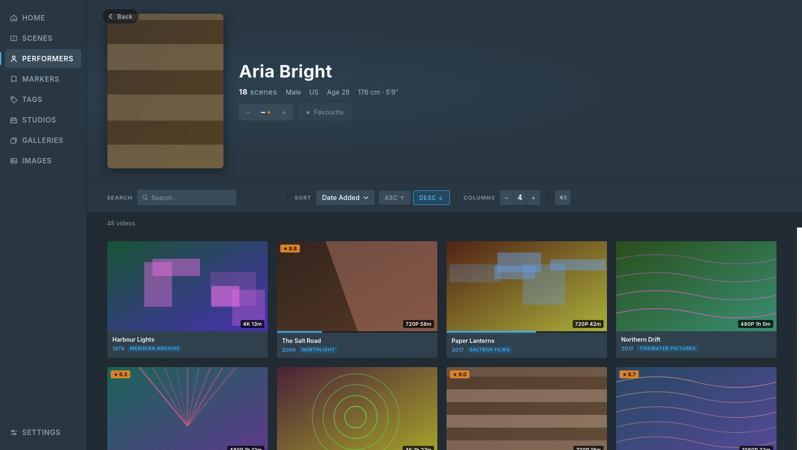
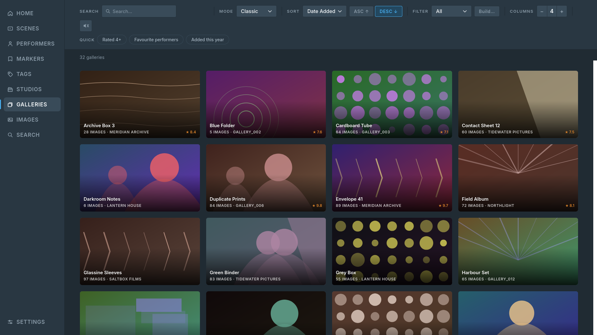
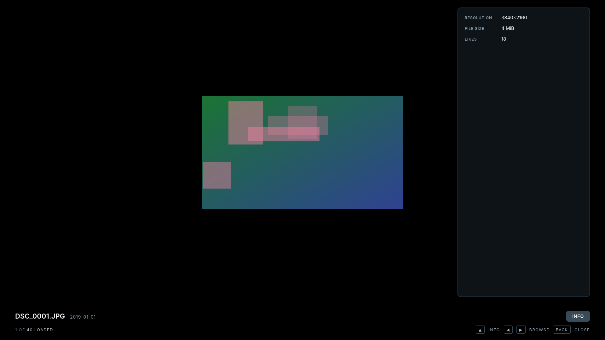
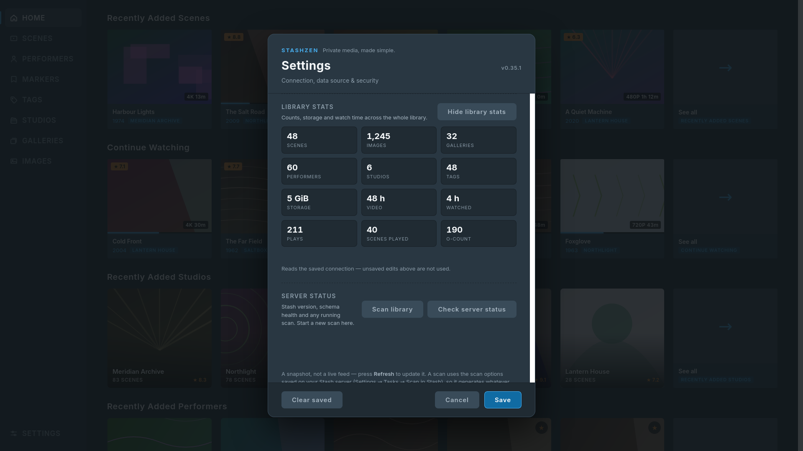
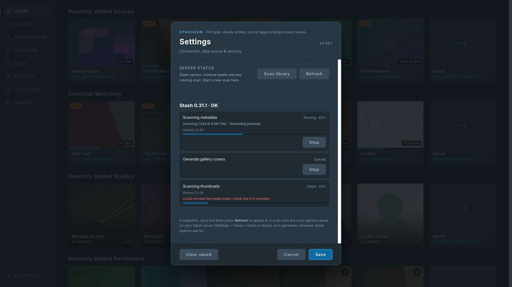

Remote-first
Spatial D-pad focus and one Back key through every page, menu, dropdown and overlay — and Back returns to the card you were on, even deep in a listing. Text fields select first and edit on OK, so the keyboard never appears unasked.
Stash · Samsung Tizen TV
StashZen puts your Stash library on the TV: a web app packaged as a Tizen widget, navigated end to end with the remote.
Requires Tizen 6.5 or newer and a reachable Stash server. Sideloaded — no store account needed.
Built for the couch
Spatial D-pad focus and one Back key through every page, menu, dropdown and overlay — and Back returns to the card you were on, even deep in a listing. Text fields select first and edit on OK, so the keyboard never appears unasked.
Stash's own order, five cards per shelf, with Continue Watching right below Recently Added Scenes. The See all tile opens that listing with the shelf's sort and filter applied.
Scenes, Performers, Markers, Tags, Studios, Galleries and Images — each with sort, search and filters, in grid, carousel, coverflow or list view. Every tab remembers its own view. Gallery cards show the studio or folder, and tag and studio carousels carry Stash's descriptions and aliases. A long press opens the same actions everywhere — play at a marker, slideshow from here, gallery shuffle.
Build a filter on screen or load a saved one. Filters round-trip to Stash, so what you save on the TV appears in Stash's UI and the other way around.
Metadata, rating, organised flag and o-count. Resume what you were watching, jump straight to a marker, clear progress without erasing watch time, or mark a scene played. When the scene belongs to a gallery, one press hands off to it.
Aliases, career, ethnicity, hair, eyes, measurements, links and tags in a single profile, alongside scene, image and gallery counts. Rating and Favourite are editable from the page and written back to Stash.
Open an image full-size and step through the listing with ←/→, or start a six-second slideshow. Info shows what Stash holds for it — studio, photographer, resolution, size, rating, tags, performers and galleries — and hides the fields that are empty. An image with no title shows its file name.
Scenes play in the browser and hand a file it cannot take to the TV's own hardware player, which decodes more formats. Settings → Playback engine offers Auto, TV player (the TV engine first, for comparing on the same file) and Browser, and Playback info says which engine is playing and why. Mute uses whichever audio path the panel offers. HLS is preferred so the timeline stays seekable. Queue the whole listing, seek with ←/→, and watch play count, resume point and o-count written back to Stash. ↓ steps to the next scene from the buttons and ↑ reaches the seek bar; on the seek bar the pair swaps, so a scene change is always one deliberate press.
Library counts, storage and watch time from Stash's own aggregates — plus the installed Stash version, schema health, and every queued or running job with its progress, subtasks, start time and errors. Scans start and jobs stop from the TV.
Standard or a true-black OLED theme, and an optional four-digit PIN asked for at launch — Back there asks whether to exit, as it does on the home screen. A built-in Test mode lets you try every screen on sample data, no server required.
Every screen, from the remote
Captured from the app's built-in Test mode; sample data, no server.








Three steps
Get the latest .wgt from
Releases. Use the
package, not the zip from an Actions run — installers fail on the zip without
saying why.
Open Apps, press 1 2 3 4 5 on the remote, turn on Developer mode and enter the IP of the computer you will install from. Restart the TV. Then install the file with Apps2Samsung or Tizen Studio.
Open StashZen and enter your server address — including http:// and
the port — plus an API key from Stash's
Settings → Security → API Key. Test connection
checks both without saving; Connect saves only if the check
passes.
StashZen stores the API key unencrypted on the TV. The optional PIN is a deterrent for someone holding the remote, not encryption: anyone who can read the installed app's storage can read the key regardless. Create a dedicated key for the TV and revoke it if the set leaves your control.
Media URLs carry the key in their query string, because images, video and subtitle files
cannot send the ApiKey header. On a trusted LAN that is usually acceptable;
beyond it, put Stash behind HTTPS. The
README
has the full notes.